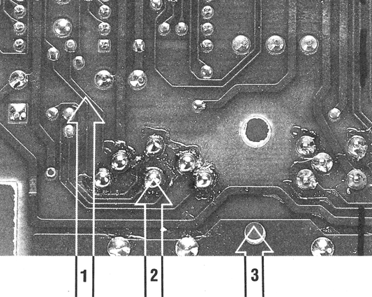
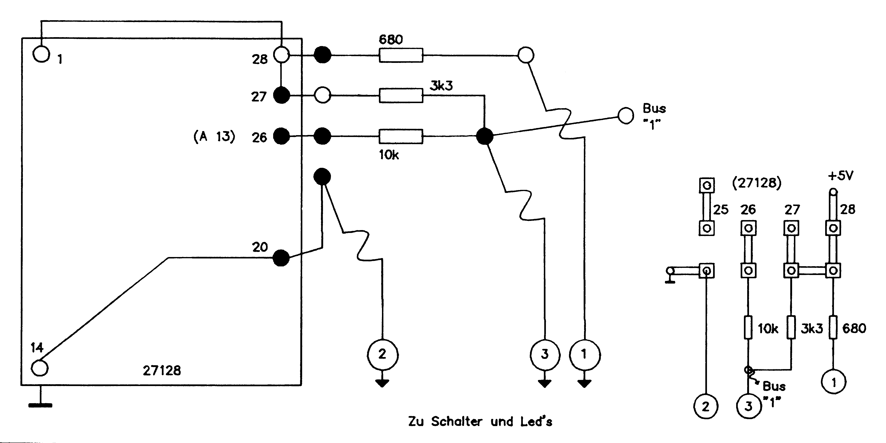
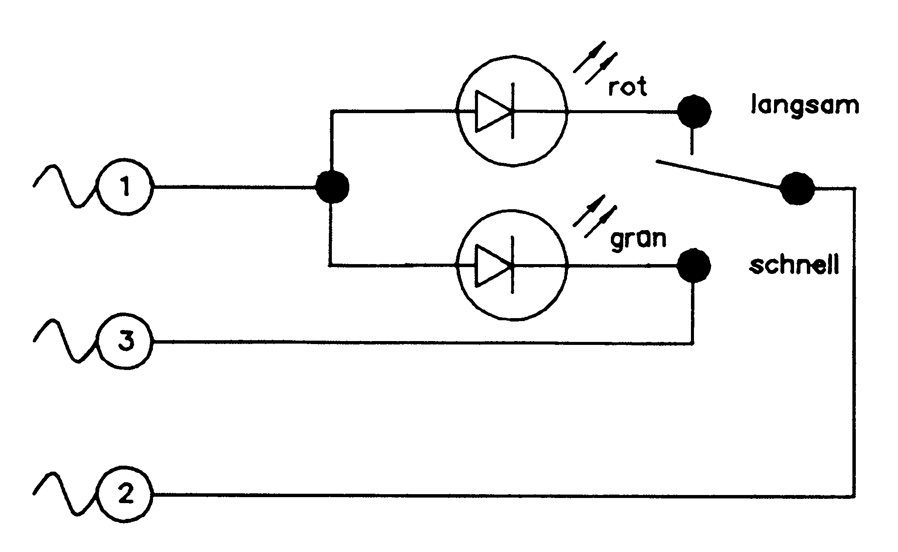
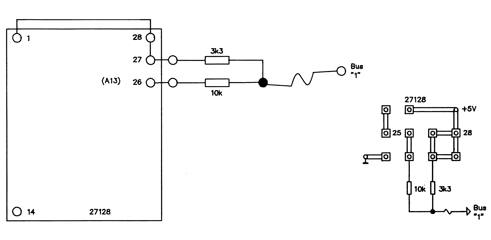
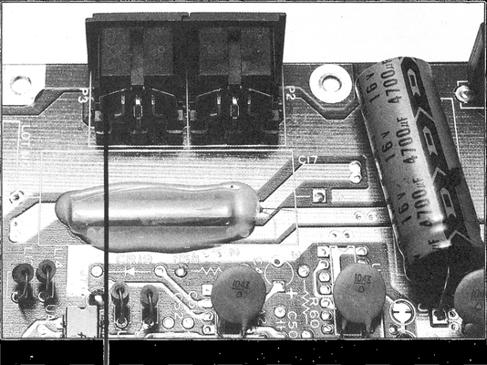
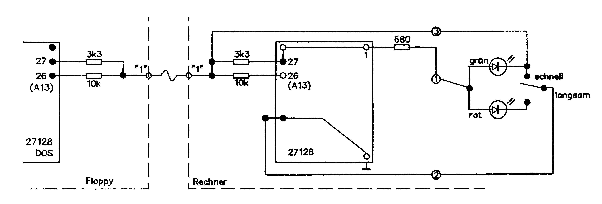
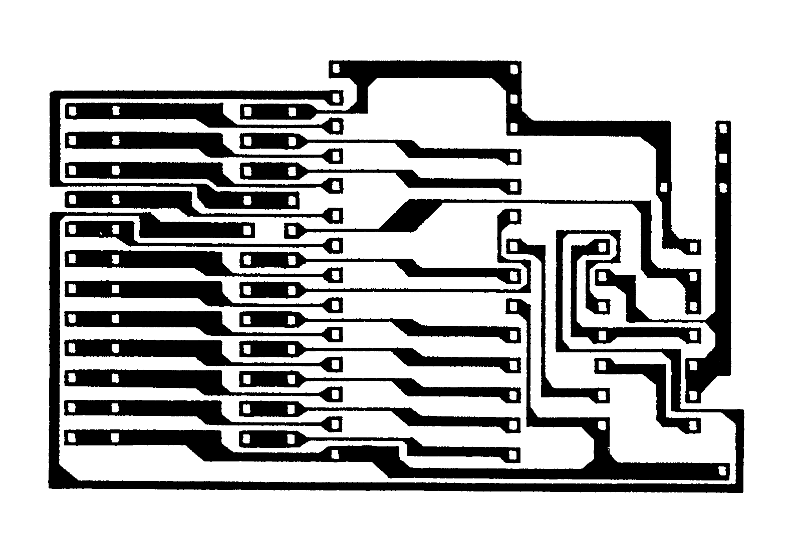
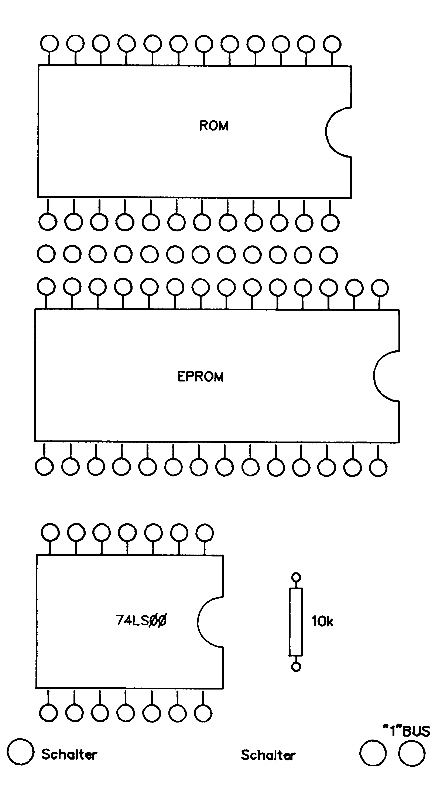
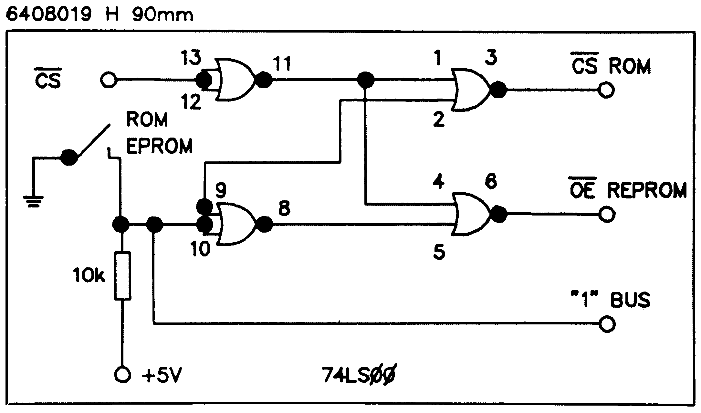

Umschaltbares 64'er-DOS
Um die Datasette am C 64 betreiben zu können, ist es nötig, das Original-Betriebssystem im Computer eingebaut zu haben. Ein problemloses Umschalten macht diese neue Schaltung möglich.
Im Gegensatz zu den ersten Versionen des 64'er-DOS, die in den Ausgaben 3/86 und 4/86 abgedruckt waren, ist bei der »druckerverträglichen« Version V3 ein erheblicher Eingriff in die Busroutinen erfolgt. Das hat zur Folge, daß die Übertragungsgeschwindigkeit auf dem Bus von Seiten der Floppy nicht mehr, wie bisher, durch das Betriebssystem des Computers gesteuert werden kann.
Bisher konnte man, falls erforderlich, das Betriebssystem mit dem Befehl OFF (F6) auf die alte (langsame) Betriebsweise umschalten. Ab Version V3 ist dies nicht mehr möglich. Es müssen beide Betriebssysteme (Kernel und DOS) ausgetauscht werden, damit ein langsamer, auch Datasetten-verträglicher Betrieb möglich ist. Um ein Umstecken der ROMs in Computer und Floppy zu vermeiden, bringt man die beiden Betriebssysteme (alt und neu) in je einem EPROM 27128 unter und verwendet dann eine Umschaltplatine, wie in Ausgabe 4/86 auf Seite 48 beschrieben. Bei geänderter Beschaltung kommt man mit einem Schalter zum Umschalten aus.
Da es umständlich ist, einen Schalter und eine LED in das Floppy-Gehäuse einzubauen, wurde nach einer anderen Lösung gesucht. Eine Software-Lösung schied wegen des zu großen Aufwandes sofort aus. Die Umschaltung sollte immer funktionieren, im Zweifelsfalle auch mit einem nicht umgerüsteten Computer. Nach Untersuchung des Buskabels stellte sich heraus, daß die Leitung linder Floppy nicht abgegriffen wird. Messungen zeigten, daß diese Ader im Normalfall mit H-Potential belegt ist. Im Computer führt diese Leitung zum Ein-/Ausgabebaustein Ul und an den Kassetten-Port. Am seriellen Bus heißt diese Leitung SRQ IN und am anderen Ende Cass RD. Eine Untersuchung aller zugänglichen Peripheriegeräte für den seriellen Bus zeigte, daß keines dieser Geräte den SRQ IN nutzt. Steigt man tiefer in diese Erkenntnis ein, stellt man fest, daß dieser Flag-Eingang außerdem den mit der Tastaturabfrage betrauten CIA beeinflußt, also kaum eine Wirkung auf den seriellen Bus haben kann.
Somit war der Weg für die »Fernbedienung« der Floppy frei. Der Pin 1 des seriellen Bus wird genommen.
Mit etwas Mut und Werkzeug
Zur Umrüstung der kleinen, nicht absturzfreien Umschaltung benötigt man außer etwas Mut, Werkzeug und einem Lötkolben folgendes:
- 2 EPROMs 27128
- 2 Widerstände 10 kOhm
- 2 Widerstände 3,3 kOhm
- 1 Widerstand 680 Ohm
- 1 Duo-LED oder 2 verschiedenfarbige LEDs
- 1 Umschalter einpolig
- 2 Umschaltplatinen nach der 64'er, 4/86 mit je einem 28poligen Sockel oder mit je zwei Sockeln 24- und 28polig als Adaptersockel nach Heft 3/86
- flexiblen Schaltdraht oder Bandkabel
Die nachfolgende Beschreibung des Umbaues ist für den erfahrenen Bastler gewiß ausreichend. Der Ungeübte holt sich besser bei einem Profi Rat oder schaut erst mal in veröffentlichte Anleitungen in den Ausgaben 10/85, 3/86 und 4/86.
Es ist zu beachten, daß die Bilder in Ausgabe 4 nicht auf die neue Beschaltung zutreffen. Bei der Beschaltung der Umschaltplatine muß man sich ganz nach den Bildern dieses Artikels richten. Vorbereitend werden die Umschaltplatinen fertig gemacht. Die 2*12 Pins steckt man von der Bestückungsseite auf die Platine und verlötet diese. Danach steckt man die Sockel von der Leiterbahnseite auf und verlötet sie ebenfalls.
Zur Umrüstung des C 64 muß die Computerplatine komplett aus dem Gehäuse genommen werden.
Achtung: Garantieverlust!
Die Platine wird umgedreht, so daß die Bauteile nach unten zeigen. Nun unterbricht man die Leiterbahn in der Nähe des seriellen Bus zum Pin 1 des Steckers (siehe Bild 1).

Jetzt wird ein Draht an den Pin 1 des Bussteckers gelötet (Bild 1). Die Platine kann nun, falls das Kernel-ROM schon gesockelt ist, wieder montiert werden. Ansonstenmußnoch das Kernel-ROM ausgelötet und gegen einen 24poligen Sockel ausgetauscht werden. Das Auslöten sollte nicht von einem Laien durchgeführt werden, da man durch unsachgemäßes Arbeiten die Computerplatine leicht zerstören kann. Das ROM befindet sich auf dem mit U4 bezeichneten Platz auf der Platine. 2
Den Draht vom Bus führt man dann zur Umschaltplatine. Er wird über einen 10-kOhm-Widerstand an den Pin 26 des EPROMs geschaltet (Adreßbit 13). Weiter lötet man von Pin 21/28 des EPROMs einen Widerstand von 3,3 kOhm an den Draht zum Busstecker. Nun wird ein zirka 25 Zentimeter langes, dreiadriges Flachkabel an die Platine geschaltet: erste Ader über 680 Ohm an Pin 27/28, zweite Ader an Masse, dritte Ader an den seriellen Bus, Pin 1 (Bild 2 und 3).

Die freie Rückseite des Kabels wird gemäß Bild 3 mit einem Umschalter und einer Duo-LED oder zwei einzelnen LEDs beschaltet. Der Schalter und die LEDs finden ihren Platz anstelle der alten Power-LED, wenn man das Blechschildchen von außen entfernt und darunter ein beziehungsweise zwei Löcher für den Schalter und die LEDs bohrt. Bei richtiger Verdrahtung leuchtet in jeder Schalterstellung nur eine LED. Die Stellung, bei der die Busader mit Masse beschaltet wird, entspricht dem schnellen System. Damit sind die Änderungen am Computer beendet.

In der Floppy werden die beiden Anschlüsse 27/28 und 26 des EPROM auf der Umschaltplatine genau wie im C 64 mit Widerständen beschaltet. Von der Verbindung der Widerstände wird ein Draht zum Busstecker, Pin 1, geführt und verlötet. Dazu ist es nicht erforderlich, die Platine des Floppycontrollers herauszunehmen. Der Draht wird einfach von oben an einen der beiden Busstecker angelötet (siehe Bilder 4 und 5). Ist der Draht fest, kann die Umschaltplatine anstelle des DOS-ROM in den entsprechenden Sockel UB4 (bei der langen Platine ist dies der Steckplatz UB5) gesteckt werden. Die beiden Widerstände biegt man am besten in eine Richtung parallel zur Längskante der Kerbe (Pin 1). Nun das neue EPROM mit seiner Kerbe in die gleiche Richtung in den Sockel der Umschaltplatine einstecken. Damit sind hier die Änderungen ebenfalls beendet und das Gehäuse der Floppy kann geschlossen werden (diese Änderung ist übrigens für beide Umschaltungen — absturzfrei wie nicht absturzfrei — gleich).


Belegung der EPROMs
Das ursprüngliche Betriebssystem und DOS muß in den EPROMSs in der »oberen« Hälfte abgelegt werden. Die schnellen Versionen V3 müssen »unten« liegen (Tabelle 1). Dadurch läßt sich eine umgerüstete Floppy trotzdem ohne Umschaltung sofort auch an einem nicht umgerüsteten C 64 in Betrieb nehmen. Der Pin 1 des seriellen Bus liegt ja im Normalfall auf H-Potential: Somit ist das langsame DOS angewählt. Unerwünschte Wechselwirkungen zwischen den Geräten am Bus wurden bisher nicht beobachtet. Selbst kopieren auf eine nicht geänderte Floppy am gleichen Bus ist problemlos möglich.
| Adresse | DOS | Kernel | A13 |
|---|---|---|---|
| $0000–$1FFF | 64'er DOS V3 | 64'er-Kernel V3 | A13=Lo |
| $2000–$3FFF | CBM DOS | CBM-Kernel | A13=Hi |
Nur die Dateneingabe von Datasette in einen nicht geänderten C 64 kann die am Bus befindliche, geänderte Floppy etwas Irritieren. Dann muß das Laufwerk kurz aus- und wieder eingeschaltet werden, um es wieder ansprechbar zu machen. Ein Umschalten der Betriebssysteme bei eingeschaltenem Computer hat fast immer einen Systemabsturz zur Folge. Deshalb sollte nach jeder Umschaltung ein Reset ausgelöst werden. Das sind jedoch Umstände, die man gerne in Kauf nehmen kann. Bild 6 zeigt noch die Zusammenschaltung des Systems insgesamt.

Es geht auch absturzfrei
Will man den Absturz beim Umschalten vermeiden, dann kann man mit etwas Mehraufwand eine andere Umschaltplatine verwenden, die eine unterbrechungsfreie Umschaltung der Betriebssysteme ermöglicht.
Zu dieser Platine (Bild 7a) benötigt man außer der oben erwähnten Änderung des DOS-Sockels noch:
1 TTL-IC der Serie 7400 oder 741500
2 Pinreihen zu zwölf Pins
je einen Sockel 12-, 24- und 28polig
1 Widerstand 10 kOhm
1 Schalter 1xEIN (gegebenenfalls auch 2xEIN. Bitte lesen Sie im nachfolgenden Text, warum).

In den 28poligen Sockel setzt man das Kernel V3 und in den 24poligen Sockel das Original-ROM. Bild 7b zeigt den Bestückungsplan, wobei die Bezeichnung »"1"-BUS« die Leitung zum seriellen Stecker kennzeichnet. Auf die Leuchtdioden zur Anzeige wurde bei dieser Platine verzichtet. In Bild 8 ist der entsprechende Schaltplan der absturzfreien Umschaltung abgebildet.


Endlich kompatibel
Mit diesem kleinen Mehraufwand an Schaltung erkauft man sich einige Vorteile So kann ein Programm zuerst schnell geladen werden, dann das System ohne Programmverlust umschalten (Reset entfällt) und wie gewohnt starten (funktioniert natürlich nicht bei Autostart-Programmen).
Eine Anmerkung noch am Rande
Möglicherweise sind in der Leitung zum seriellen Port im Computer von Platinenserie zu Platinenserie Änderungen erfolgt. Sollte sich die Datasette nach dem Umschalten auf das Original-Betriebssystem nicht korrekt bedienen lassen, so müssen Sie die aufgetrennte Leitung mit einem weiteren Schaltkontakt (Schalter 2xEIN) überbrücken. Hier hilft nur ausprobieren.
Außerdem kann diese Platine, ohne Auftrennung der Leiterbahn, der Verbindung»"1"«und der Floppy-Umschaltplatine auch ganz normal als Zweifach-Umschaltplatine genutzt werden.
(Dipl.-Ing. Immo Freudenberg/dm)Noch einige Tips zum 64'er-DOS
Trotz der »druckerkorrigierten« Version V3 kann es beim Wiesemann-Interface noch zu Problemen kommen. Abhilfe schafft hier jedoch eine Anpassung des Wiesemann-Interfaces an SpeedDos, das die Firma Wiesemann für zirka 30 Mark ausführt.
Für jeden Anwender, der nur eine Floppy zur Verfügung hat, dürfte wohl die Belegung der F8-Taste (DEV #8/ #9) unnütz sein. Hier bietet sich eine andere Belegung wie zum Beispiel die des SAVE-Befehls an. Dazu müssen Sie nur im FAST KERN, das ab Adresse $2000 in Speicher liegen muß, folgende Änderungen ausführen:
$30F4 53 41
$33B0 45
$33B4 A6 A5 A9 22 D0 13
und schon ist die Taste F8 mit dem Befehl »SAVE« belegt.
(Oliver Dietz/dm)Scheinbar zu lang geraten ist die neue Disk-Controller-Routine in der Floppy. Zu ganz bestimmten Zeitpunkten ist die Floppy dadurch etwas zu lange nicht ansprechbar. Dies kann unter Umständen zum Absturz des Systems führen (das passiert zum Beispiel sehr oft bei der Arbeit mit dem Assembler ASSY/M).
Abhilfe schafft eine geringe Verlängerung der »Toleranzzeit« des Betriebssystems beim Test auf einen DEVICE NOT PRESENT. Zu verändern ist dabei der Wert der Speicherstelle $EEB5, und zwar vom alten Wert $B8 auf den neuen Wert $C0.
Auch der »Flight Simulator II« verträgt sich nicht mit dem 64'er-DOS und hängt sich während des Ladens auf. Da der Flugsimulator eigene Laderoutinen verwendet, hilft nur die Anschaffung einer Umschaltplatine oder aber eine Änderung dieser Laderoutinen.
Zu ändern ist dabei nur ein einziges Byte. Dies ist das Byte $8C in Block 01 03 auf der Flugsimulator-Diskette (Änderungen natürlich nur auf einem Backup der Original- Diskette durchführen):
| Statt $BC: | 0A | 38 | 66 | BC | 20... |
| gehört $BC: | 08 | 38 | 66 | BC | 20... |
Der Flugsimulator läßt sich selbstverständlich weiterhin mit dem normalen DOS laden.
(Wolfgang Resele/dm)